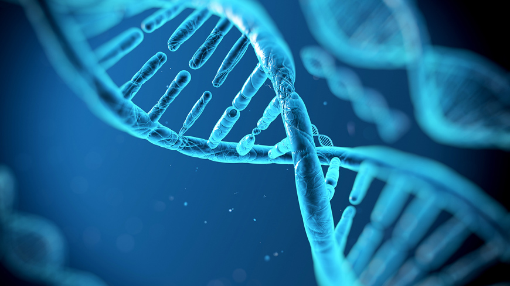

Your student has the opportunity to take STEM course in two pathways: Biomedical Science or Engineering. Check out which one fits your interest today!
- Students explore a fictitious death. Through investigation they examine autopsy reports, medical histories, and potential treatment options. The main courses of study include: crime scenes, diabetes, sickle cell disease, the heart, bacterial infections, and postmortem.
- Students follow a fictious family through a variety of diseases. Students explore infections, DNA, cancer. Through a variety of learning opportunities and case studies the students are exposed to medical interventions in immunology, surgery, genetics, pharmacology, and diagnostics.
- This is the capstone course, and students design innovative solutions for current health challenges. Students will work with a mentor in the biomedical field.